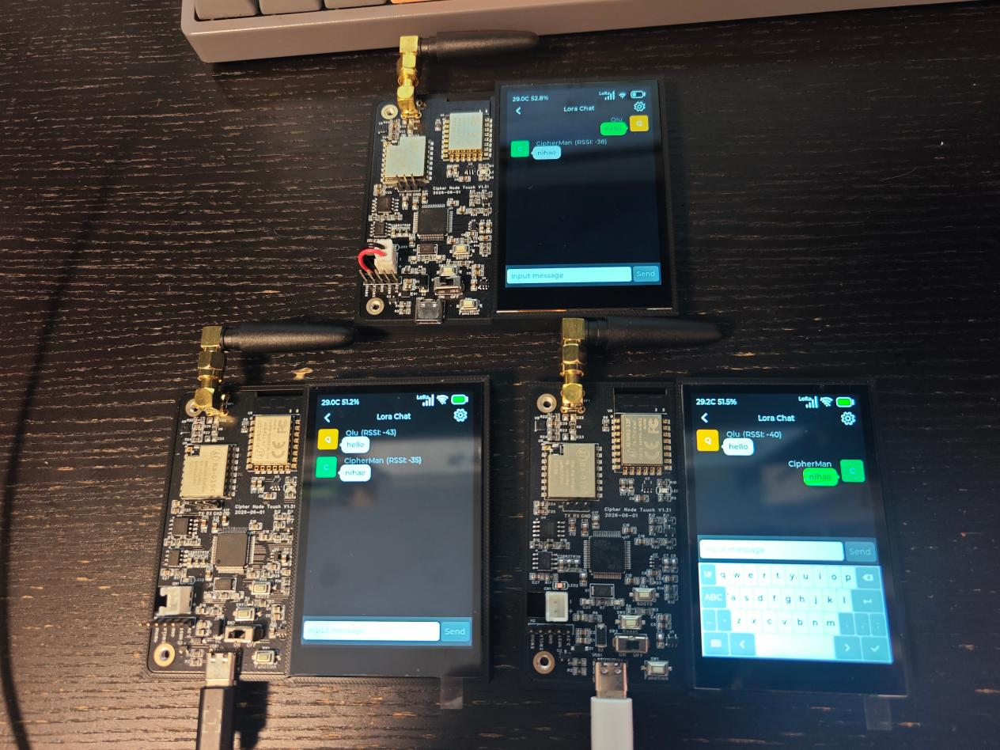
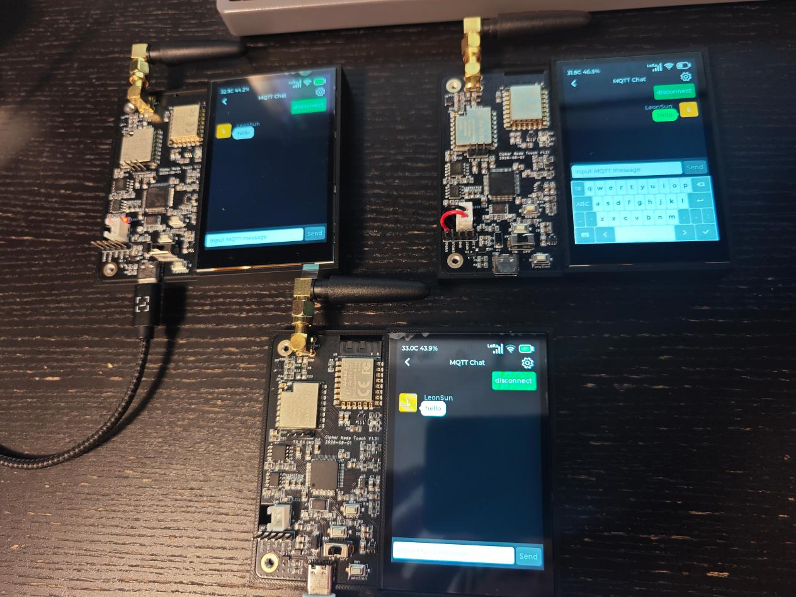
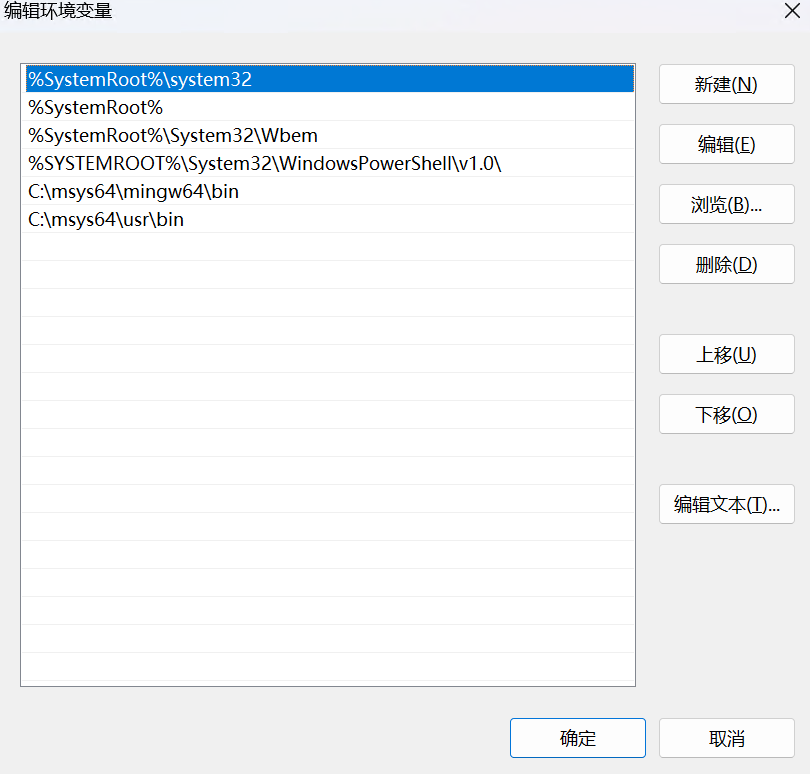
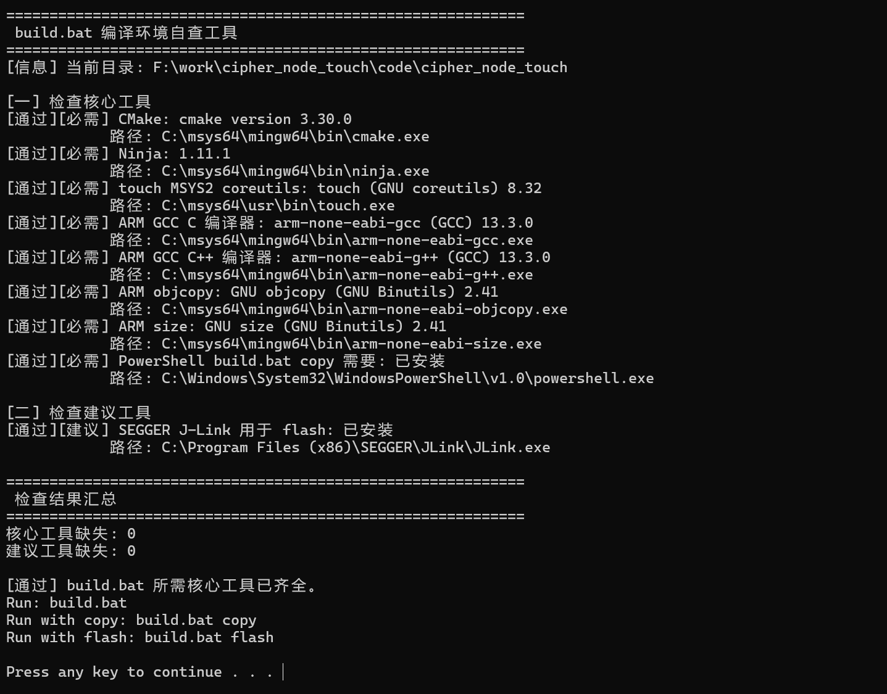

INTRODUCTION
前言
感谢您选择 Cipher Node Touch 开发板。
本手册采用纯古法手工编写，非 AI 生成。全文尽可能站在初学者和开发者的视角进行讲解，力求用最容易理解的方式说明问题，希望能够帮助您快速上手。
学习嵌入式最重要的是实践，而实践中最重要的一步，就是亲手完成编译与烧录。
对于初学者来说，亲自为程序增加一条打印信息、点亮一颗 LED、修改一个界面元素，所获得的经验和理解，往往远比花一整天阅读教材更加深刻。因为只有真正动手，才能建立起对硬件、软件和开发流程的直观认识。
您可以按照本手册的教程搭建开发环境，完成工程的编译与烧录，然后尝试添加一些自己感兴趣的功能，例如设计新的 UI 页面、接入自己的网络协议、连上手机蓝牙与自己的 APP 互动，或者实现一个属于自己的小项目。
当然，您也可以借助 AI Agent 作为开发助手。只要能够清晰地描述需求，AI 就能够在代码编写、问题分析和功能实现等方面提供帮助。但请记住，AI 只是工具，真正决定成长速度的，仍然是您的思考、实践和探索。
愿您在不断尝试、不断调试、不断解决问题的过程中，逐渐掌握嵌入式开发的乐趣与方法。
祝开发愉快！
CHAPTER 01
硬件介绍
主控 MCUSTM32F405RGT6
显示与触摸480 × 320 IPS 屏幕，电容式触摸
LoRaSPI 直连 LLCC68 射频芯片，不是串口透传模块，MCU 可直接操作射频芯片
无线连接集成 Wi-Fi + 蓝牙模块，使用 AT 指令操作
传感器I²C 接口的高性能 SHT30-DIS 温湿度传感器
存储1 MB SPI Flash，在 Demo 中主要用于模拟 U 盘和固件升级
CHAPTER 02
上电与 Demo 介绍
无电池时，可以直接插 USB 供电。注意板子上有一个拨动开关，拨到“on”时为打开。开发板出厂时已经烧录 bootloader 和 Demo 固件，启动时会显示 Cipher Node Touch Logo，之后进入主菜单。
为了保护屏幕，Demo 带有自动熄屏功能。一段时间不操作屏幕时，屏幕会熄灭；按 Function 按键或触摸屏幕可重新唤醒。自动熄屏时间可在 System 的 LCD 设置中修改。
Demo 仍在持续更新，目前支持 LoRa Chat、MQTT Chat、贪吃蛇游戏和系统菜单等功能。
LoRa Chat

LoRa Chat 支持多个开发板之间进行近距离聊天，并显示对方的信号强度。多个开发板设置相同的 LoRa 参数后，就可以收到彼此发送的聊天内容。LoRa 参数页面可通过 LoRa Chat 页面右上角的小齿轮按键进入。
聊天内容在无线传输过程中是加密的。需要互相聊天的开发板应设置相同的 LoRa Secret Key。LoRa Secret Key 是一个字符串，传输使用的 AES 加解密密钥是该字符串的 SHA-256 哈希结果。
MQTT Chat

MQTT Chat 可以通过作者已经搭建好的 MQTT Broker，经由互联网进行聊天。在连接服务器之前，需要先在 System 中连接 Wi-Fi。
CHAPTER 03
下载源码
如果想学习 Demo 里的功能是如何实现的，可以下载并查看源码。建议优先使用 Git 下载代码；如果还不会使用 Git，建议尽快学习。如果暂时不想使用 Git，也可以从 GitHub、Gitee 下载 ZIP 包，或通过百度网盘下载。
CHAPTER 04
安装环境
项目提供两种开发环境：Keil 和 CMake 工具链。推荐使用 CMake 工具链，原因如下：
- Keil 涉及正版授权，价格对个人开发者和小团队较高；使用破解版存在法律和未来的不确定性风险。（声明：作者未使用破解版 Keil，本项目的 Keil 工程文件均由 AI 生成。）
- 在 AI 时代，应尽可能使用命令行工具，以便 AI 高效协助。CMake 工具链是当前较为主流和通用的方案。
CMake 工具链安装步骤
- 1下载并安装 MSYS2。
- 2打开 MSYS2 MinGW 64-bit 终端。
- 3逐条运行以下命令安装工具链，遇到提问统一输入
y。安装报错多数是网络问题，可更换网络环境后重试。pacman -Syyu pacman -S mingw-w64-x86_64-gcc pacman -S mingw-w64-x86_64-arm-none-eabi-gcc pacman -S mingw-w64-x86_64-make pacman -S mingw-w64-x86_64-cmake - 4在环境变量
Path中按以下顺序增加两个路径。请根据自己的 MSYS2 安装位置调整。C:\msys64\mingw64\bin C:\msys64\usr\bin
- 5运行工程内的
check_build_env.bat。显示“[通过] build.bat 所需核心工具已齐全。”时，说明工具链安装完成。
CHAPTER 05
编译
使用 Keil 时，在 MDK 目录下打开工程文件，然后点击编译。使用 CMake 工程时，调用 build.bat 脚本即可编译。
编译完成后，build 目录下会生成以下文件：
| 文件名 | 作用 |
|---|---|
cipher_node_touch.hex | 带地址信息的固件文件。使用 J-Link、STM32CubeProgrammer 等烧录时推荐使用，无需再指定地址。 |
cipher_node_touch.bin | 原始固件文件，无地址信息。 |
cipher_node_touch.elf | 包含文件名、行号等调试信息的可执行调试文件，普通烧录无需使用。 |
cipher_node_touch.map | 链接映射文件，用于分析 Flash/RAM 使用、排查内存溢出、查看符号地址及优化体积。 |
update.bin | 压缩并带有头信息的 OTA 固件，用于 U 盘升级。 |
CHAPTER 06
烧录
U 盘烧录
正常运行的开发板插入电脑后，会被识别为一个 700 多 KB 的 U 盘。将编译生成的 update.bin 复制到该 U 盘，开发板会自动重启并安装固件。使用 build.bat copy 可自动完成编译与复制。
如果程序无法正常启动，例如启动后反复错误复位，导致无法进行普通 U 盘烧录，可在开发板复位或上电时一直按住 Function 按键，进入 Recover Mode 后再烧录。
烧录器烧录
开发板的 H2 排针是 SWD 接口，连接 J-Link、ST-Link 等工具即可烧录。
STM32 ISP 烧录
按住 BOOT0 按键时启动或复位开发板，开发板会进入 STM32 ISP 模式，可使用 STM32CubeProgrammer 连接 MCU 并烧录固件。
CHAPTER 07
查看源码
推荐使用 VS Code 查看源码和进行日常开发。使用 VS Code 打开 cipher_node_touch 文件夹，安装“C/C++”插件后查看代码体验更佳。c_cpp_properties.json 中定义的 includePath 仅用于 VS Code 的代码浏览，不参与实际编译。
在 VS Code 中按 Ctrl + ` 打开终端，可使用以下命令：
| 命令 | 作用 |
|---|---|
build.bat | 编译 |
build.bat rebuild | 删除全部过程临时文件，然后重新编译 |
build.bat copy | 编译后通过 USB U 盘方式升级固件，需用 USB 将开发板连接到电脑 |
build.bat flash | 编译后通过 J-Link 将固件烧录到开发板 |
查看打印
查看打印是很好的调试习惯。单步调试有一定局限，使用打印抓取 Log，也便于测试人员在复现问题时保留现场信息。
本项目的打印同时提供 UART1 和 USB 模拟串口两种输出：
- UART1：接入板子上的 H1 排针，波特率为
921600。 - USB 模拟串口：插上 USB 后会识别出一个虚拟串口，直接打开即可，波特率不限。
CHAPTER 08
AI Agent
项目已经内置 Skill，目录为：
.agents\skills\embedded\SKILL.md使用 AI Agent 打开项目文件夹后，可以询问 AI 是否能看到项目 Skill，以确认 Skill 是否已经生效。